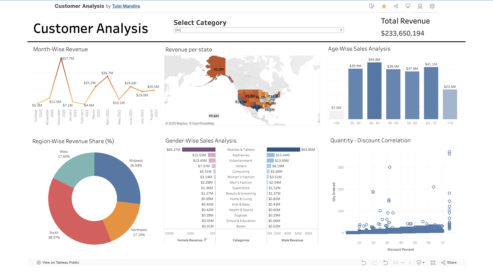

Interactive insights into customer purchasing behavior, revenue trends, and sales patterns.
The Customer Analysis Dashboard provides a detailed and interactive view of customer purchasing behavior, revenue generation, and sales patterns across various dimensions. This project showcases how businesses can derive actionable insights from data to better understand their performance, identify growth opportunities, and refine strategies.
This dashboard analyzes customer behavior across different categories, regions, genders, age groups, and time periods, all while offering the flexibility to dive deeper using dynamic filters. It is built to help businesses answer crucial questions such as:
The ability to filter by category, time period, and demographic details ensures that users can focus on specific segments and tailor their decision-making process.
The dashboard breaks down revenue into 15 distinct product categories, such as Appliances, Beauty & Grooming, Books, Computing, Entertainment, Health & Sports, Home & Living, Kids & Baby, Men’s Fashion, Mobiles & Tablets, Others, School & Education, Soghaat, Superstore, and Women’s Fashion.
Mobiles & Tablets and Women’s Fashion dominate revenue, while categories like Books, Health & Sports, and Soghaat show potential for growth, highlighting opportunities for businesses to invest in underperforming segments.
A heatmap that visualizes sales distribution across the United States. States such as California, Texas, and New York consistently generate high revenue. Smaller contributions are observed in less populous states such as Alaska and Vermont, which could indicate limited market penetration or a smaller customer base.
The Month-Wise Revenue Chart tracks sales performance over time, revealing seasonal trends. December sees revenue spikes due to holiday shopping, while periods like January and July represent off-peak seasons.
A pie chart that shows the South leading in revenue share (38.37%), followed by the Midwest (26.93%), with the Northeast showing opportunities for improvement.
A bar chart that breaks down revenue by gender across categories. Female customers drive revenue in Women’s Fashion and Beauty & Grooming, while male customers dominate in Mobiles & Tablets and Appliances.
A bar chart explaining revenue contributions by age groups. The 30-40 age group generates the highest revenue, while younger and older customers contribute less.
A scatter plot that shows how higher discounts often lead to larger quantities ordered, although excessive discounts show diminishing returns.
Below is a snapshot of the dashboard for a quick preview:
Explore the full dashboard here: View the Dashboard